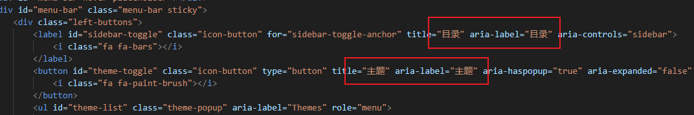
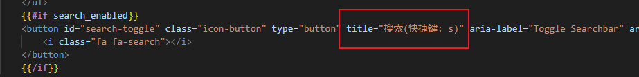
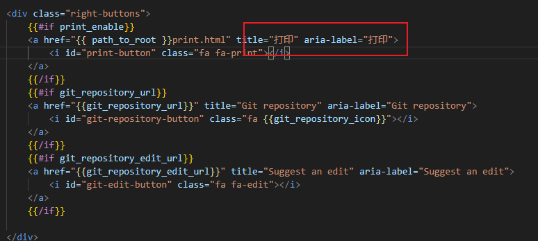
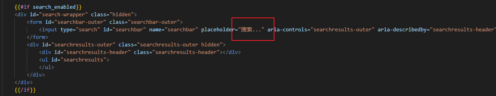
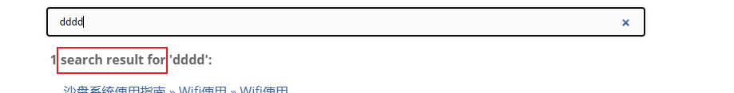

mdBook
注意：国内有很多个人翻译的中文版本，时间比较久远，还是看官网的英文版本或者翻译为中文来查看。
常用命令
构建：--open 可选，自动打开本地文件，但不是以服务方式运行
mdbook build --open
运行服务，然后访问：http://localhost:3000
mdbook server
基于默认主题微调
设置界面字体
-
theme/css/general.css中的:root和Body可整体调整左侧章节目录和整文的字体大小 -
theme/css/chrome.css中的.sidebar可整体调整左侧章节目录字体大小，两者结合，可满足相关需求
设置整文行间距
theme/css/general.css:
.content p { line-height: 1.5em; }
.content ol { line-height: 1.5em; }
.content ul { line-height: 1.5em; }
主题
PageToc：比较简单容易配置的目录插件，但是显示感觉怪怪的，在加上目录后，文章内容还是居中，就导致布局不合理
可自定义标题目录，为配置成功，该主题在Pagetoc的基础上添加了自定义功能，可配置文章内容全屏显示，但是配置后运行不起来，即使克隆作者的仓库也运行不起来。
中文支持
网页的工具栏等都是英文显示，在国内使用需要更改为中文。
- 设置网页为中文
在国内使用应该使用中文
- 在
book.toml中设置为中文language = "zh-CN"，这仅仅是说明我们的网页使用的是中文
[book]
authors = ["LIXINGJUN"]
language = "zh-CN"
multilingual = false
src = "src"
title = "成都轨道学院培训楼使用指南"
description = "该文档仅用于成都轨道学院培训楼使用，禁止外传。"
- 设置工具栏为中文
- 工具栏默认提示为英文，如下图中的目录切换：

- 这需要通过修改主题来实现，在默认创建的书中没有主题的配置，根据官网文档，通过执行命令
mdbook init --theme来创建默认的主题文件，然后通过修改文件中内容来修改. - 通过修改
index.hbs文件中的对应内容




- 支持中文搜索
说明： 默认不支持中文搜索，也就是在搜索框总输入中文，搜索不到结果，具体见社区： Rust社区支持中文说明，总结以下的处理方式：
- 安装指定插件
cargo install mdbook-mermaid
cargo install mdbook-plantuml
- 本地创建
assets，在社区中指示的仓库下载指定的文件到assets中 - 配置
book.toml
[output.html]
mathjax-support = true
additional-css = ["assets/mermaid.css", "assets/print.css", "assets/all-page.css"]
additional-js = ["assets/fzf.umd.js", "assets/elasticlunr.js", "assets/mermaid.min.js", "assets/import-html.js","assets/searcher.js"]
- 配置成功案例 https://gitee.com/shtzj/userguide.git 项目设置。
搜索结果描述的修改
如下图显示，我们搜索到内容后提示有多少个结果，默认是英文显示的，要改为中文，这里通过 index.hbs无法修改，因为这个数据是动态显示的，在后端实现。

通过在渲染输出中，通过字符串查找，在 seracher.js 文件中找到了响应的代码位置，简单的操作，就是每次我们只要将对应的地方改为中文即可，但是存在一个问题，每次构建都会覆盖改好的内容。
原代码
function formatSearchMetric(count, searchterm) {
if (count == 1) {
return count + " search result for '" + searchterm + "':";
} else if (count == 0) {
return "No search results for '" + searchterm + "'.";
} else {
return count + " search results for '" + searchterm + "':";
}
}
希望的代码
function formatSearchMetric(count, searchterm) {
if (count == 1) {
return count + " 个搜索结果 '" + searchterm + "':";
} else if (count == 0) {
return "无搜索结果 '" + searchterm + "'.";
} else {
return count + " 个搜索结果 '" + searchterm + "':";
}
}
临时解决方式（不理想）
- 将
seracher.js先改好，拷贝到assets文件夹下； - 配置
book.toml文件，如下图增加searcher.js的引用
[output.html]
mathjax-support = true
additional-css = ["assets/mermaid.css", "assets/print.css", "assets/all-page.css"]
additional-js = ["assets/fzf.umd.js", "assets/elasticlunr.js", "assets/mermaid.min.js", "assets/import-html.js","assets/searcher.js"]
- 每次构建后，会在输出目录的assts下，创建
searcher.js文件，但是同时根目也有相同的文件，需要删除根目下的searcher.js文件，否则导致点击 搜索按钮无效。
异常汇总
(1)部署github章节显示空白
- 在本地测试所有内容正常，部署到Github上后，
csharp文件夹下的所有章节都显示空白，将csharp改为c-sharp后显示正常。
章节跳转
本页跳转
[跳转到章节](#chapter-1)
...
<a name="chapter-1"></a>
# 章节1
这里是章节1的内容。
跨页跳转
假设 a.md 和 b.md 在同一个目录下
a内容：
<a name="chapter-1"></a>
# 章节1
这里是章节1的内容。
<a name="chapter-2"></a>
# 章节2
这里是章节2的内容。
在 b 中跳转到 a 的章节2
[跳转到 a 的章节2](a.md#chapter-2)